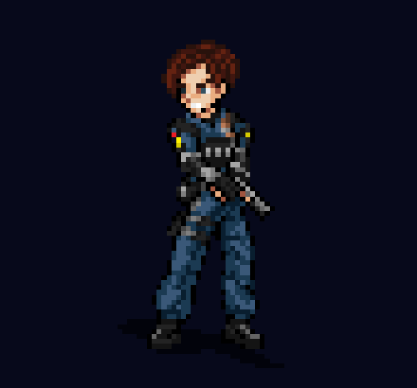
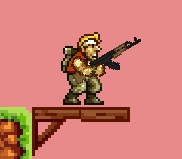
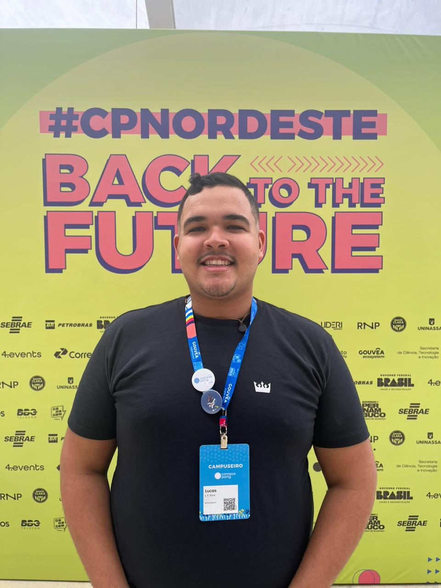
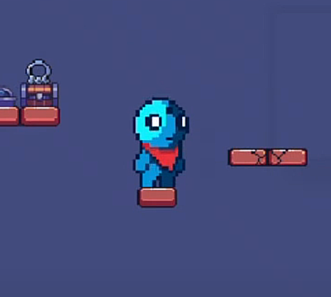
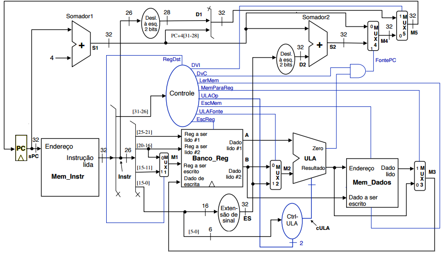
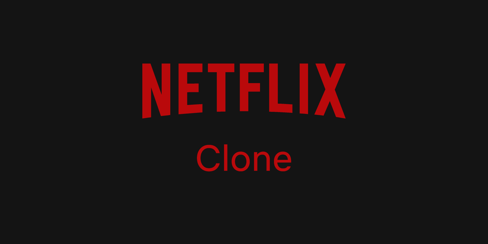
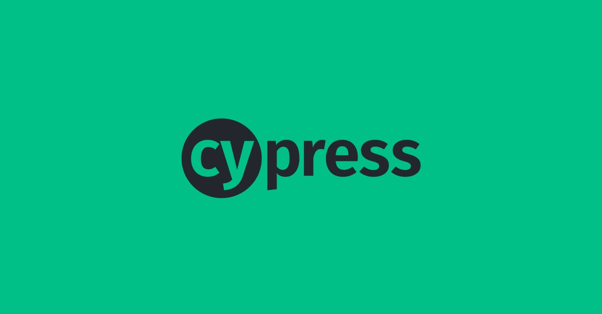
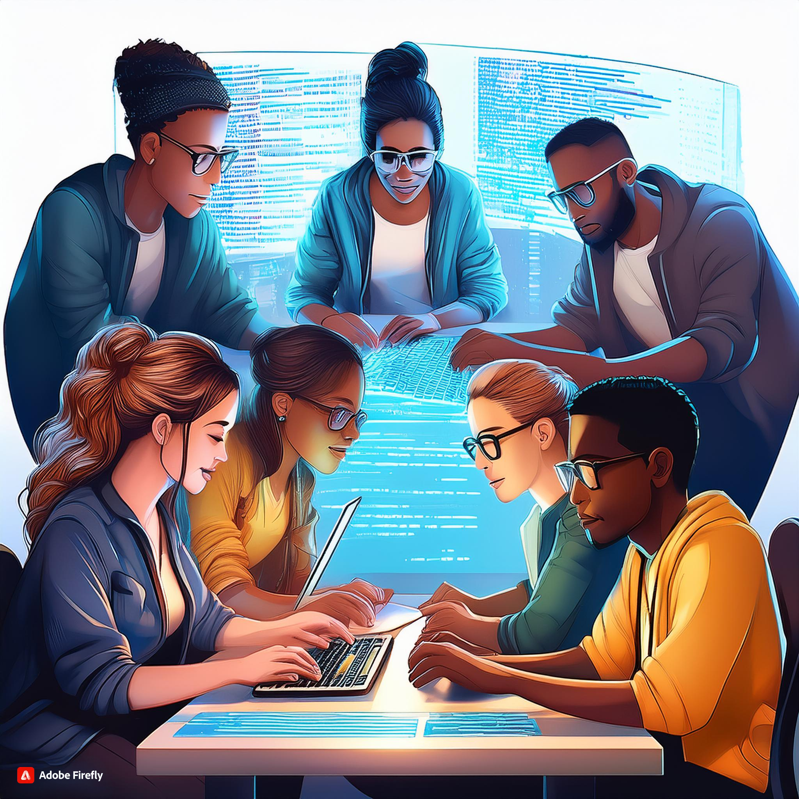
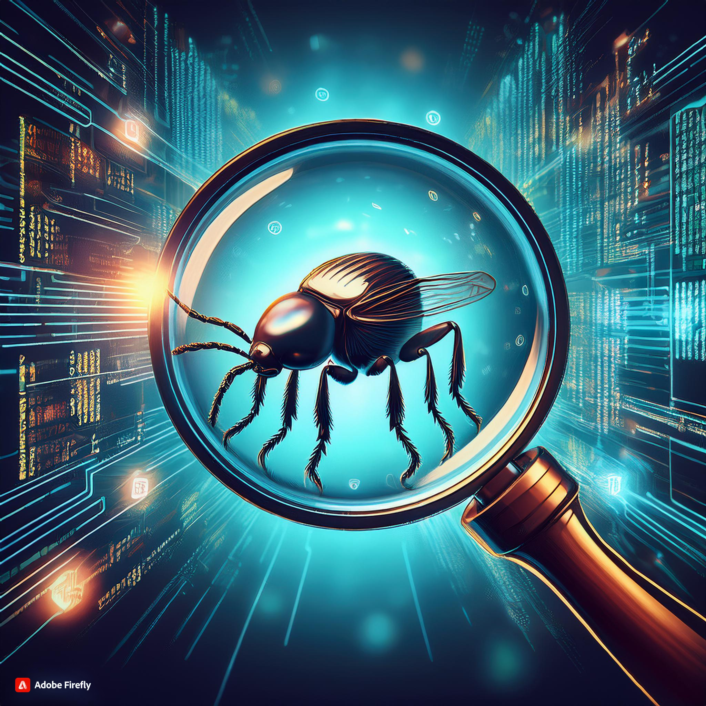

I created automatic template emails with HTML and CSS, supported release quality control, and conducted functional, exploratory, and interface testing. I also integrated external APIs, maintained automated tests with Jest, and developed and refined internal API endpoints.
I performed manual and automated testing with Cypress and Gherkin, documented test cases and requirements, managed tests with Squash, and monitored quality metrics through reports. I also contributed to process improvements and created templates for test documentation.
I provided technical support and computer maintenance, managed the academic system and network infrastructure, and assisted users through in-person, phone, and online support.
I supported administrative activities by managing both physical and digital files, organizing documents, controlling office supplies, and assisting the public in person.
Cooks' Books is a platform for creating and sharing personal recipe collections. Users can organize and store their recipes in digital notebooks and discover new recipes from other users. This project was built in Java for a university course.

Echo is a prototype horror game in development, created with Unity, that aims to provide an accessible gaming experience for blind people. The project was born from the desire to create a game where the lack of vision is not an obstacle to having fun and being scared and was inspired by a blind colleague at UFRPE. To achieve this, I am exploring game design techniques focused on audio and an accessible interface, to create an experience similar to horror games from the 5th generation of consoles for blind people.

Steel War is a 2D action shooter game prototype, developed with Unity, inspired by classics like Metal Slug and featuring point-and-click mechanics. The project was created as a group activity in the Digital Games subject at UFRPE.

This portfolio is a work in progress that I started while learning front-end development with JavaScript, CSS, and HTML during an intensive course. I plan to keep adding to it as I learn new skills, and if you are reading this, you are seeing the result of the project.

This was my first university project and my initial foray into programming. It is a 2D puzzle-platformer game developed in C using the Raylib library, created by a team of six novice programmers. In this project, I was responsible for developing the first level and contributed to the menu design.

This project implements a simplified 32-bit single-cycle MIPS processor in Verilog. It was developed as part of the Computer Architecture and Organization course. The processor models both the datapath and control unit, supporting a fundamental subset of MIPS instructions, including arithmetic, logic, memory access, and branch operations.
A command-line task management app built with JavaScript and Node.js during a RocketSeat event. It allows users to create, view, complete, and remove personal goals, with data persistence through a local metas.json file. The project uses the @inquirer/prompts library to provide an interactive CLI menu.

A fictional streaming website developed in a group project at Softex PE (BFD Front-End, class 21). Built with HTML and CSS, it simulates a movie and series platform with dedicated pages for home, listings, and content details, inspired by Netflix's design.

Collaboratively developed a comprehensive testing suite for a system managing shelter residents. I focused on automated end-to-end tests using Cypress with the Page Object Model (POM) structure. The project included manual tests exploring edge cases, data-driven scenarios, and black-box techniques, as well as API and UI automation. Our work ensured reliability in functionalities like adding, updating, and removing residents, while verifying the integrity of related family and shelter data.
2020 - 2026
2021 - 2022
In Progress
In Progress

The paper explores the use of Communities of Practice (CoPs) to scale agile methods in large software development projects. Through a Systematic Literature Mapping (SLM), the study found that CoPs can be effective in promoting coordination between teams, knowledge sharing, and an open community culture. These factors are crucial for successful agile adoption in large-scale projects. This paper was written during a scientific initiation project with Marcelo Marinho from UFRPE.

In this paper, we describe the successful experience of a pilot project to improve software testing processes at the TCE-PE, carried out through a technical cooperation between the institution and UFRPE. The pilot used principles of the BPM methodology to identify needs, propose changes, and monitor the testing process in a software development project. We report not only initial results but also lessons learned from this government-academia partnership initiative.